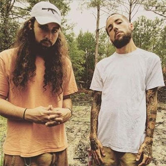
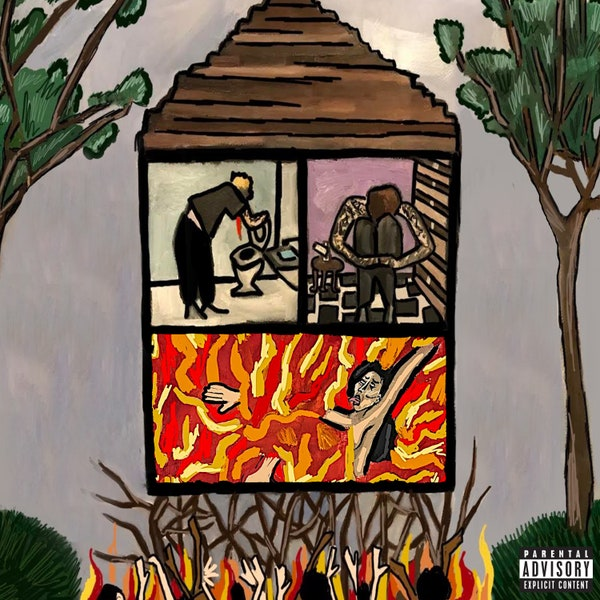

New Orleans rap duo $uicideboy$ rose from the dark corners of the underground, merging hip-hop with a punk and occult aesthetic fit for graveyards and clubs alike. With dozens of projects to their name (including at least 20 installments of their Kill Yourself EP series), they released their official full-length debut, I Want to Die in New Orleans, in 2018. Without much mainstream attention, they racked up multiple gold-certified singles and stormed charts around the world. In 2021, they issued their sophomore LP, Long-Term Effects of Suffering, their second consecutive U.S. Top Ten. Even though they combined their talents in 2014, the pair were already well-acquainted as cousins.
